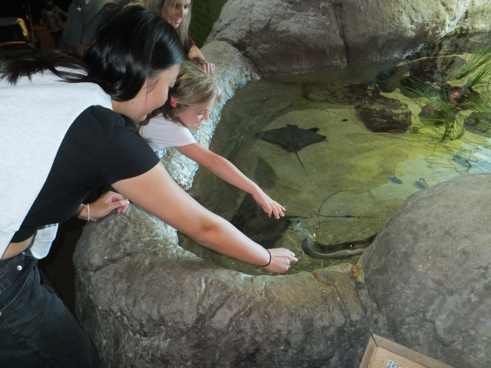
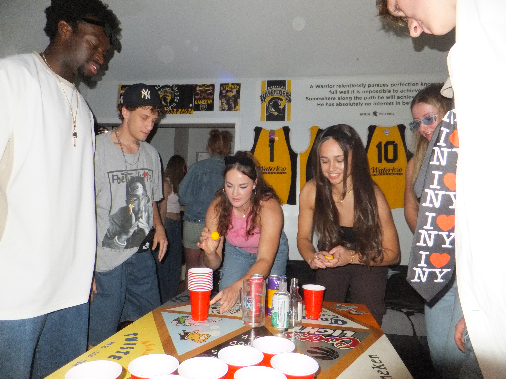
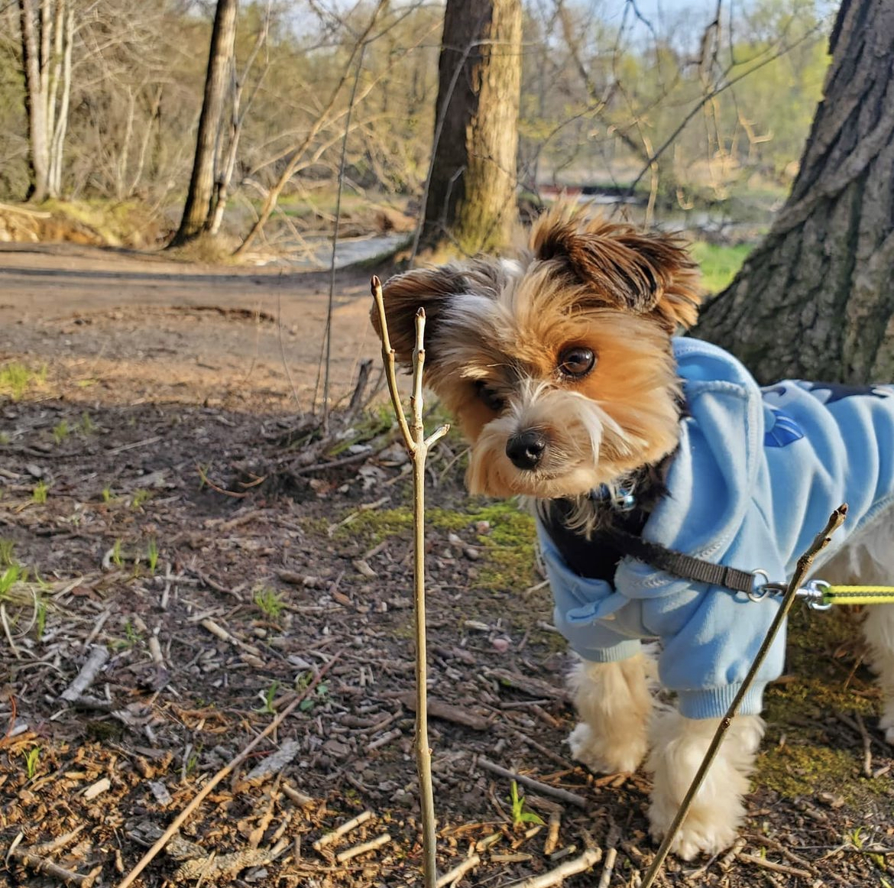
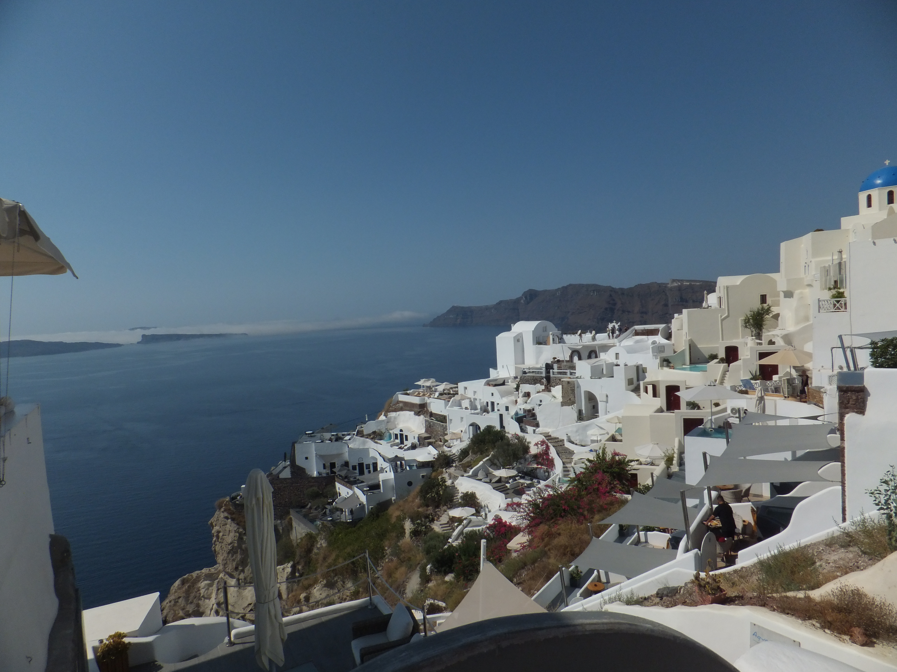
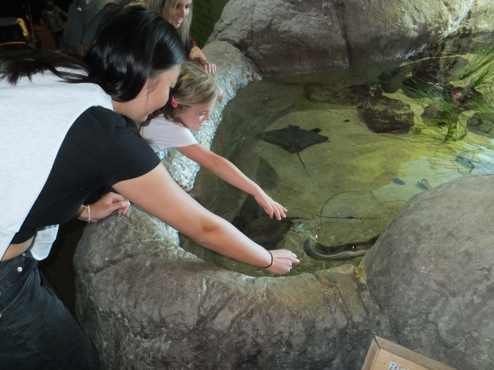
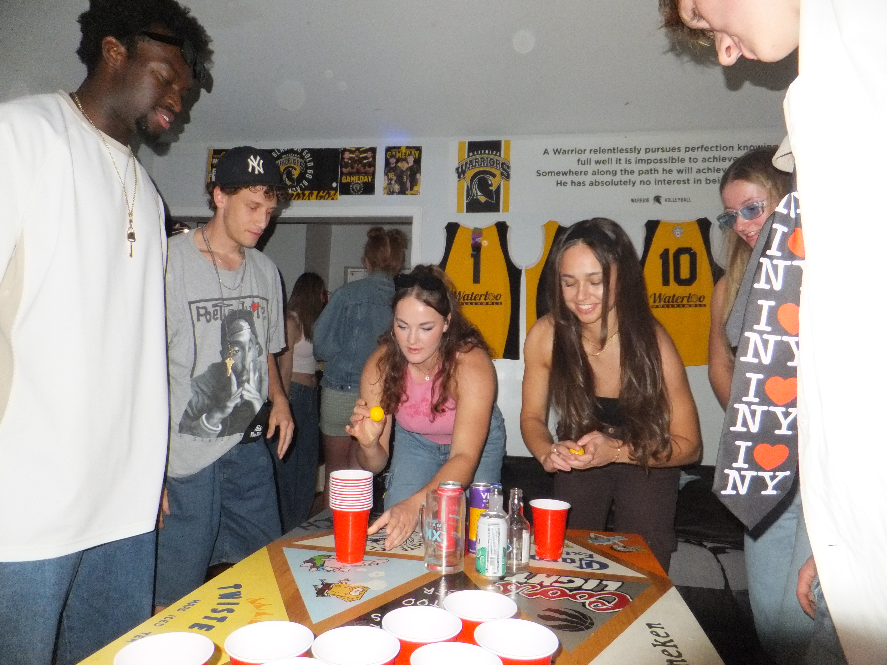
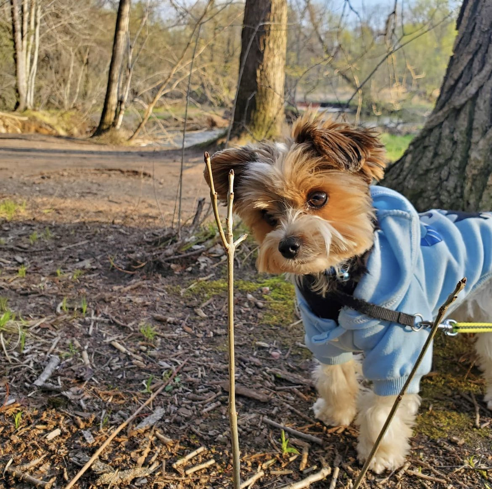
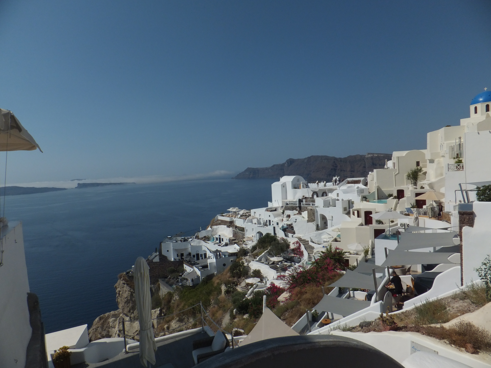
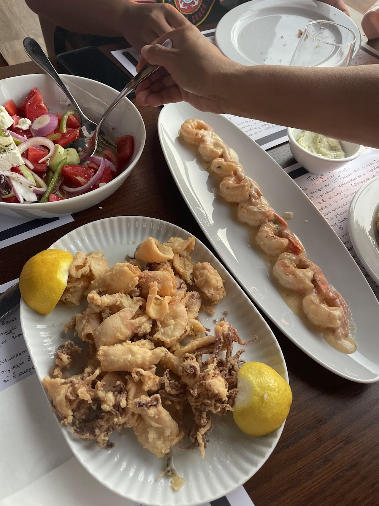
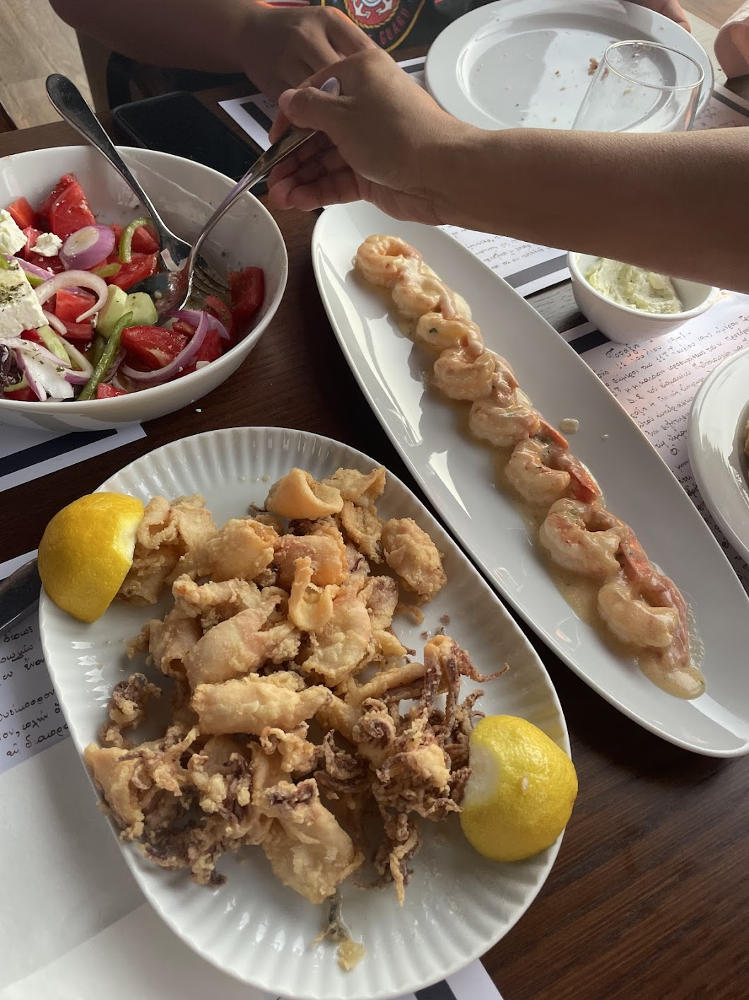

Me in Photos
.JPG) 







 

.jpg)
Me in Words
Growing up as an Asian-Canadian, I was instilled with many important values from a young age. A drive for success, balance, and passion were always emphasized as essential traits to cultivate, shaping who I am today.
My drive for success stems from my competitive nature in sports, where I constantly push myself to achieve my goals, as well as my academic and professional aspirations as a designer. Whether it's working towards honing my craft or excelling in school, I have been and always will be deeply committed to my ambitions and dreams.
Balance has also always been a central theme in my life. Being immersed in both Asian and Western cultures has taught me the importance of equilibrium in all aspects of life. It’s about working hard in your career while maintaining meaningful connections with family and friends, and always carving out time for yourself. For me, balance also means continuously developing my current skills while exploring new ones.
Passion is another value I’ve learned to embrace fully. There’s this common stereotype that every Asian parent wants their child to become a doctor, and while that may hold some truth, my parents (at least mine) always encouraged me to follow my passions and do what I love. That encouragement has shaped how I live my life. I am passionate about connecting with people, which I express through photographing memories and sharing them on my (excessively organized) Instagram and Linktree. I am passionate about exploring new places, making an effort to travel whenever I can. And above all, I am passionate about making the most of every opportunity life gives me. Whether it’s through capturing moments, seeking new experiences, or pursuing my goals, I strive to live with purpose and authenticity.